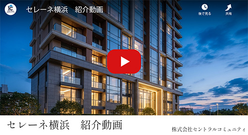
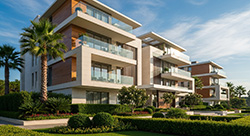
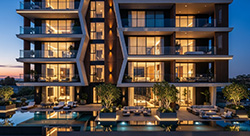

WCH-M Oriented
外気の影響を受けにくい断熱性と、
高効率な設備を導入。
家計や環境に優しい省エネ性を備えたマンション。
WCH-M Oriented（ウィッチ・マンション
オリエンテッド）は、建物の外皮断熱性能の向上と高効率の省エネ設備等の導入により、
住棟全体で年間の一次エネルギー消費量を25％以上削減することを目指すマンションです。

空と海を臨む、横浜の最前席。
リビングの窓越しに広がる街と港。
ここから始まる、家族だけの上質な日常。
「横浜」駅へ2駅・3分、
未来を描く都市「みなとみらい」
現代的な美しさと、贅沢な静けさが調和する場所。
都市の喧騒を遠くに、心地よい暮らしを。
ここから、新しい暮らしが輝き出す。
※9月第三・第四週は、9/17(水)18(木)を休業日とさせて頂きます。
来場予約 会員登録、資料請求 ご来場場所物件のポイントとなる特徴をまとめた動画です
海と街が、家族の暮らしに寄り添う
今も進化を続ける横浜。
多彩な商業と洗練された都市の景観が日常を彩ります。
徒歩圏に揃う学び・暮らし・健やかさ。日々を支える環境が、上質な街に整う。
みなとみらい線徒歩5分、都心へもスムーズアクセス
みなとみらい駅から横浜駅へ2駅3分、渋谷駅へ直通30分。
JR線に乗り換えれば品川・東京へもスムーズにアクセス可能です。
さらに東急東横線・東京メトロ副都心線・西武線とも直通運転を行っているため、多方面への移動が快適に叶います。
時を超えて輝くタワーが、暮らしに静けさと開放感をもたらす。
都市の中心で、日々を特別にする住まいです。
街の喧騒を抜けた先に、住まう人だけの上質なラウンジ。
洗練された空間と、海に広がる眺望が、邸宅ならではの贅沢を演出します。
洗練されたデザインと最新の技術、細部にまで行き届いたこだわり。
静けさと現代的なエッジが共存する空間で、あなたの新たな物語が始まります。
Atype
Btype
Ctype
歴史と発展を兼ね備えた横浜エリア。
希少な立地と高層レジデンスの価値が、時を経ても変わらない資産として未来へ受け継がれます。
東京大学建築学科卒業
パリの建築事務所で5年間研鑽
高層住宅・ラグジュアリーホテルの設計を多数手がける
国内外建築賞受賞歴多数
「日本建築学会賞」受賞
「アジアデザインアワード」金賞受賞
［実績参考写真］  
光と風を感じる空間が、暮らしに豊かさをもたらす。建物は単なる住まいではなく、生活の舞台である。
WCH-M Oriented（ウィッチ・マンション
オリエンテッド）は、建物の外皮断熱性能の向上と高効率の省エネ設備等の導入により、
住棟全体で年間の一次エネルギー消費量を25％以上削減することを目指すマンションです。